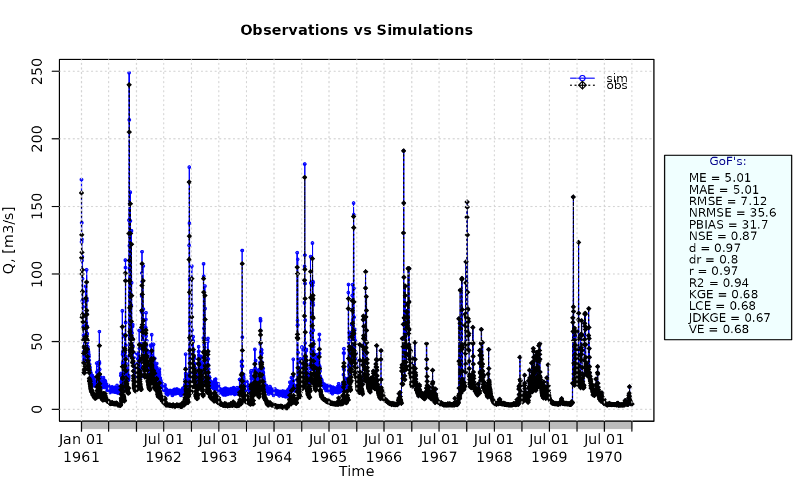

Split Kling-Gupta Efficiency
sKGE.RdSplit Kling-Gupta efficiency between sim and obs.
This goodness-of-fit measure was developed by Fowler et al. (2018), as a modification to the original Kling-Gupta efficiency (KGE) proposed by Gupta et al. (2009). See Details.
Usage
sKGE(sim, obs, ...)
# Default S3 method
sKGE(sim, obs, s=c(1,1,1), na.rm=TRUE, method=c("2009", "2012", "2021"),
start.month=1, out.PerYear=FALSE, fun=NULL, ...,
epsilon.type=c("none", "Pushpalatha2012", "otherFactor", "otherValue"),
epsilon.value=NA)
# S3 method for class 'data.frame'
sKGE(sim, obs, s=c(1,1,1), na.rm=TRUE, method=c("2009", "2012", "2021"),
start.month=1, out.PerYear=FALSE, fun=NULL, ...,
epsilon.type=c("none", "Pushpalatha2012", "otherFactor", "otherValue"),
epsilon.value=NA)
# S3 method for class 'matrix'
sKGE(sim, obs, s=c(1,1,1), na.rm=TRUE, method=c("2009", "2012", "2021"),
start.month=1, out.PerYear=FALSE, fun=NULL, ...,
epsilon.type=c("none", "Pushpalatha2012", "otherFactor", "otherValue"),
epsilon.value=NA)
# S3 method for class 'zoo'
sKGE(sim, obs, s=c(1,1,1), na.rm=TRUE, method=c("2009", "2012", "2021"),
start.month=1, out.PerYear=FALSE, fun=NULL, ...,
epsilon.type=c("none", "Pushpalatha2012", "otherFactor", "otherValue"),
epsilon.value=NA)Arguments
- sim
numeric, zoo, matrix or data.frame with simulated values
- obs
numeric, zoo, matrix or data.frame with observed values
- s
numeric of length 3, representing the scaling factors to be used for re-scaling the criteria space before computing the Euclidean distance from the ideal point c(1,1,1), i.e.,
selements are used for adjusting the emphasis on different components. The first elements is used for rescaling the Pearson product-moment correlation coefficient (r), the second element is used for rescalingAlphaand the third element is used for re-scalingBeta- na.rm
a logical value indicating whether 'NA' should be stripped before the computation proceeds.
When an 'NA' value is found at the i-th position inobsORsim, the i-th value ofobsANDsimare removed before the computation.- method
character, indicating the formula used to compute the variability ratio in the Kling-Gupta efficiency. Valid values are:
-) 2009: the variability is defined as ‘Alpha’, the ratio of the standard deviation of
simvalues to the standard deviation ofobs. This is the default option. See Gupta et al. (2009).-) 2012: the variability is defined as ‘Gamma’, the ratio of the coefficient of variation of
simvalues to the coefficient of variation ofobs. See Kling et al. (2012).-) 2021: the bias is defined as ‘Beta’, the ratio of
mean(sim)minusmean(obs)to the standard deviation ofobs. The variability is defined as ‘Alpha’, the ratio of the standard deviation ofsimvalues to the standard deviation ofobs. See Tang et al. (2021).- start.month
[OPTIONAL]. Only used when the (hydrological) year of interest is different from the calendar year.
numeric in [1:12] indicating the starting month of the (hydrological) year. Numeric values in [1, 12] represent months in [January, December]. By default
start.month=1.- out.PerYear
logical, indicating whether the output of this function has to include the Kling-Gupta efficiencies obtained for the individual years in
simandobsor not.- fun
function to be applied to
simandobsin order to obtain transformed values thereof before computing this goodness-of-fit index.The first argument MUST BE a numeric vector with any name (e.g.,
x), and additional arguments are passed using....- ...
arguments passed to
fun, in addition to the mandatory first numeric vector.- epsilon.type
argument used to define a numeric value to be added to both
simandobsbefore applyingfun.It is was designed to allow the use of logarithm and other similar functions that do not work with zero values.
Valid values of
epsilon.typeare:1) "none":
simandobsare used byfunwithout the addition of any numeric value. This is the default option.2) "Pushpalatha2012": one hundredth (1/100) of the mean observed values is added to both
simandobsbefore applyingfun, as described in Pushpalatha et al. (2012).3) "otherFactor": the numeric value defined in the
epsilon.valueargument is used to multiply the the mean observed values, instead of the one hundredth (1/100) described in Pushpalatha et al. (2012). The resulting value is then added to bothsimandobs, before applyingfun.4) "otherValue": the numeric value defined in the
epsilon.valueargument is directly added to bothsimandobs, before applyingfun.- epsilon.value
-) when
epsilon.type="otherValue"it represents the numeric value to be added to bothsimandobsbefore applyingfun.
-) whenepsilon.type="otherFactor"it represents the numeric factor used to multiply the mean of the observed values, instead of the one hundredth (1/100) described in Pushpalatha et al. (2012). The resulting value is then added to bothsimandobsbefore applyingfun.
Details
Garcia et al. (2017) tested different objective functions and found that the mean value of the KGE applied to the streamflows (i.e., KGE(Q)) and the KGE applied to the inverse of the streamflows (i.e., KGE(1/Q) is able to provide a an aceptable representation of low-flow indices important for water management. They also found that KGE applied to a transformation of streamflow values (e.g., log) is inadequate to capture low-flow indices important for water management.
The robustness of their findings depends more on the climate variability rather than the objective function, and they are insensitive to the hydrological model used in the evaluation.
Traditional Kling-Gupta efficiencies (Gupta et al., 2009; Kling et al., 2012) range from -Inf to 1 and, therefore, sKGE should also range from -Inf to 1. Essentially, the closer to 1, the more similar sim and obs are.
Knoben et al. (2019) showed that traditional Kling-Gupta (Gupta et al., 2009; Kling et al., 2012) values greater than -0.41 indicate that a model improves upon the mean flow benchmark, even if the model's KGE value is negative.
Value
If out.PerYear=FALSE: numeric with the Split Kling-Gupta efficiency between sim and obs. If sim and obs are matrices, the output value is a vector, with the Split Kling-Gupta efficiency between each column of sim and obs
If out.PerYear=TRUE: a list of two elements:
- sKGE.value
numeric with the Split Kling-Gupta efficiency. If
simandobsare matrices, the output value is a vector, with the Split Kling-Gupta efficiency between each column ofsimandobs- KGE.PerYear
numeric with the Kling-Gupta efficincies obtained for the individual years in
simandobs.
References
Fowler, K.; Coxon, G.; Freer, J.; Peel, M.; Wagener, T.; Western, A.; Woods, R.; Zhang, L. (2018). Simulating runoff under changing climatic conditions: A framework for model improvement. Water Resources Research, 54(12), 812-9832. doi:10.1029/2018WR023989.
Gupta, H. V.; Kling, H.; Yilmaz, K. K.; Martinez, G. F. (2009). Decomposition of the mean squared error and NSE performance criteria: Implications for improving hydrological modelling. Journal of hydrology, 377(1-2), 80-91. doi:10.1016/j.jhydrol.2009.08.003.
Kling, H.; Fuchs, M.; Paulin, M. (2012). Runoff conditions in the upper Danube basin under an ensemble of climate change scenarios. Journal of Hydrology, 424, 264-277, doi:10.1016/j.jhydrol.2012.01.011.
Pushpalatha, R., Perrin, C., Le Moine, N. and Andreassian, V. (2012). A review of efficiency criteria suitable for evaluating low-flow simulations. Journal of Hydrology, 420, 171-182. doi:10.1016/j.jhydrol.2011.11.055.
Pfannerstill, M.; Guse, B.; Fohrer, N. (2014). Smart low flow signature metrics for an improved overall performance evaluation of hydrological models. Journal of Hydrology, 510, 447-458. doi:10.1016/j.jhydrol.2013.12.044.
Santos, L.; Thirel, G.; Perrin, C. (2018). Pitfalls in using log-transformed flows within the sKGE criterion. doi:10.5194/hess-22-4583-2018
Knoben, W.J.; Freer, J.E.; Woods, R.A. (2019). Inherent benchmark or not? Comparing Nash-Sutcliffe and Kling-Gupta efficiency scores. Hydrology and Earth System Sciences, 23(10), 4323-4331. doi:10.5194/hess-23-4323-2019.
Note
obs and sim has to have the same length/dimension
The missing values in obs and sim are removed before the computation proceeds, and only those positions with non-missing values in obs and sim are considered in the computation
Examples
##################
# Example 1: Looking at the difference between 'method=2009' and 'method=2012'
# Loading daily streamflows of the Ega River (Spain), from 1961 to 1970
data(EgaEnEstellaQts)
obs <- EgaEnEstellaQts
# Simulated daily time series, initially equal to twice the observed values
sim <- 2*obs
# KGE 2009
KGE(sim=sim, obs=obs, method="2009", out.type="full")
#> $KGE.value
#> [1] -0.4142136
#>
#> $KGE.elements
#> r Beta Alpha
#> 1 2 2
#>
# KGE 2012
KGE(sim=sim, obs=obs, method="2012", out.type="full")
#> $KGE.value
#> [1] 0
#>
#> $KGE.elements
#> r Beta Gamma
#> 1 2 1
#>
# sKGE (Fowler et al., 2018):
sKGE(sim=sim, obs=obs, method="2012")
#> [1] 0
##################
# Example 2:
# Loading daily streamflows of the Ega River (Spain), from 1961 to 1970
data(EgaEnEstellaQts)
obs <- EgaEnEstellaQts
# Generating a simulated daily time series, initially equal to the observed series
sim <- obs
# Computing the 'sKGE' for the "best" (unattainable) case
sKGE(sim=sim, obs=obs)
#> [1] 1
##################
# Example 3: sKGE for simulated values equal to observations plus random noise
# on the first half of the observed values.
# This random noise has more relative importance for ow flows than
# for medium and high flows.
# Randomly changing the first 1826 elements of 'sim', by using a normal distribution
# with mean 10 and standard deviation equal to 1 (default of 'rnorm').
sim[1:1826] <- obs[1:1826] + rnorm(1826, mean=10)
ggof(sim, obs)

sKGE(sim=sim, obs=obs)
#> [1] 0.651655
##################
# Example 4: sKGE for simulated values equal to observations plus random noise
# on the first half of the observed values and applying (natural)
# logarithm to 'sim' and 'obs' during computations.
sKGE(sim=sim, obs=obs, fun=log)
#> [1] 0.46389
# Verifying the previous value:
lsim <- log(sim)
lobs <- log(obs)
sKGE(sim=lsim, obs=lobs)
#> [1] 0.6935973
##################
# Example 5: sKGE for simulated values equal to observations plus random noise
# on the first half of the observed values and applying (natural)
# logarithm to 'sim' and 'obs' and adding the Pushpalatha2012 constant
# during computations
sKGE(sim=sim, obs=obs, fun=log, epsilon.type="Pushpalatha2012")
#> [1] 0.5246817
# Verifying the previous value, with the epsilon value following Pushpalatha2012
eps <- mean(obs, na.rm=TRUE)/100
lsim <- log(sim+eps)
lobs <- log(obs+eps)
sKGE(sim=lsim, obs=lobs)
#> [1] 0.7009262
##################
# Example 6: sKGE for simulated values equal to observations plus random noise
# on the first half of the observed values and applying (natural)
# logarithm to 'sim' and 'obs' and adding a user-defined constant
# during computations
eps <- 0.01
sKGE(sim=sim, obs=obs, fun=log, epsilon.type="otherValue", epsilon.value=eps)
#> [1] 0.4761664
# Verifying the previous value:
lsim <- log(sim+eps)
lobs <- log(obs+eps)
sKGE(sim=lsim, obs=lobs)
#> [1] 0.6940795
##################
# Example 7: sKGE for simulated values equal to observations plus random noise
# on the first half of the observed values and applying (natural)
# logarithm to 'sim' and 'obs' and using a user-defined factor
# to multiply the mean of the observed values to obtain the constant
# to be added to 'sim' and 'obs' during computations
fact <- 1/50
sKGE(sim=sim, obs=obs, fun=log, epsilon.type="otherFactor", epsilon.value=fact)
#> [1] 0.5625905
# Verifying the previous value:
eps <- fact*mean(obs, na.rm=TRUE)
lsim <- log(sim+eps)
lobs <- log(obs+eps)
sKGE(sim=lsim, obs=lobs)
#> [1] 0.707689
##################
# Example 8: sKGE for simulated values equal to observations plus random noise
# on the first half of the observed values and applying a
# user-defined function to 'sim' and 'obs' during computations
fun1 <- function(x) {sqrt(x+1)}
sKGE(sim=sim, obs=obs, fun=fun1)
#> [1] 0.8410809
# Verifying the previous value, with the epsilon value following Pushpalatha2012
sim1 <- sqrt(sim+1)
obs1 <- sqrt(obs+1)
sKGE(sim=sim1, obs=obs1)
#> [1] 0.7922515
##################
# Example 9: sKGE for a two-column data frame where simulated values are equal to
# observations plus random noise on the first half of the observed values
SIM <- cbind(sim, sim)
OBS <- cbind(obs, obs)
sKGE(sim=SIM, obs=OBS)
#> obs obs
#> 0.651655 0.651655
##################
# Example 10: sKGE for each year, where simulated values are given in a two-column data
# frame equal to the observations plus random noise on the first half of the
# observed values
SIM <- cbind(sim, sim)
OBS <- cbind(obs, obs)
sKGE(sim=SIM, obs=OBS, out.PerYear=TRUE)
#> $sKGE.value
#> obs obs
#> 0.651655 0.651655
#>
#> $sKGE.PerYear
#> obs obs
#> 1961 0.55778247 0.55778247
#> 1962 0.37518324 0.37518324
#> 1963 0.19105604 0.19105604
#> 1964 -0.09780021 -0.09780021
#> 1965 0.49032849 0.49032849
#> 1966 1.00000000 1.00000000
#> 1967 1.00000000 1.00000000
#> 1968 1.00000000 1.00000000
#> 1969 1.00000000 1.00000000
#> 1970 1.00000000 1.00000000
#>